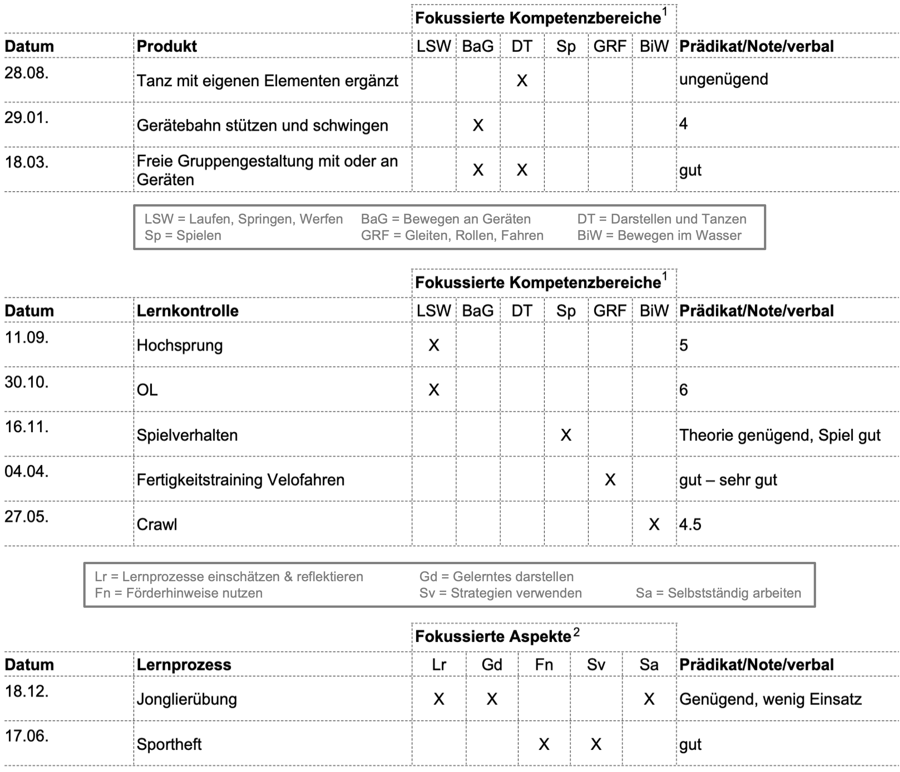

Gesamturteil und Persönliche und Schlüsselkompetenzen
Grundlagen der Beurteilung
Im kommenden Lernmodul geht es um die Frage, wie das Gesamturteil für den Beurteilungsbericht zustande kommt und wie die Personalen Kompetenzen und Schlüsselkompetenzen Eingang in den Beurteilungsbericht finden.
Die Studierenden …
- kennen die gesetzlichen Grundlagen bezüglich Gesamturteil und Portfolio Personale Kompetenzen und Schlüsselkompetenzen.
- können das Zustandekommen der Gesamtbeurteilung erklären und kritisch reflektieren.
- setzen sich vertieft mit dem «Portfolio Personale Kompetenzen und Schlüsselkompetenzen» auseinander.
Einleitung Gesamturteil
Dass in der Volksschule beurteilt werden muss, mehr noch, dass sogenannte «Beurteilungsanlässe» durchgeführt werden sollen, ist in den meisten Kantonen vorgeschrieben bzw. verordnet (DVBS, AHB).
Wenn es um die Gesamtbeurteilung geht, dann stellen wir uns nicht die Frage, wie ein einzelner Beurteilungsanlass (Lernkontrolle, Prüfung, Test, Produkt, Plakat, Vortrag, …) durchgeführt, eingeschätzt und schliesslich zurückgemeldet werden soll, sondern, wie man anhand mehrer und im Verlaufe des Schuljahres stattgefundener Beurteilungsanlässe zu einem abschliessenden Gesamturteil kommt. Dieses Gesamturteil wird üblicherweise in einem Zeugnis - im Kanton Bern spricht man von einem Beurteilungsbericht - am Ende des Schuljahres den Schüler:innen ausgehändigt.
a) Anzahl Beurteilungsberichte
Anhand der folgenden Lernmaterialien setzen Sie sich mit folgenden Leitfragen auseinander.
- Wann, wie oft und in welcher Form werden im Kanton Bern Zeugnisse bzw. Beurteilungsberichte abgegeben?
- Wie kommt man anhand mehrerer Beurteilungsanlässe im Verlauf des Schuljahres schliesslich zu einem Gesamturteil am Ende des Schuljahres?
- Was muss oder darf bzw. darf nicht in die Gesamtbeurteilung «einfliessen»?
- Anzahl Beurteilungsberichte Wie oft Zeugnisse oder Beurteilungsberichte im Verlauf einer Schulkarriere abgegeben werden, ist von Kanton zu Kanton unterschiedlich. Im Kanton Bern sieht die Situation wie folgt aus.
Die blauen Striche in der folgenden Grafik kennzeichnen die Zeitpunkte der Aushändigung der Gesamtbeurteilungen in den Fachbereichen und damit zusammenhängend auch des Entscheids über den Übertritt ins nächste Schuljahr. Im Zyklus 1 geschieht dies am Ende der 2. Klasse, im Zyklus 2 am Ende der 4., 5. und 6. Klasse und im im Zyklus 3 am Ende der 7., 8. und 9. Klasse (DVBS, Artikel 9, Absatz 4).
Es ist zu beachten, dass zwischen den Zyklen (Zyklus 1, Zyklus 2 und Zyklus 3) wesentliche Unterschiede bestehen.
Zyklus 1: «Im Beurteilungsbericht am Ende des 2. Schuljahres auf der Primarstufe werden die fachlichen Kompetenzen danach beurteilt, ob die Schüler:in dem Grundanspruch gemäss Lehrplan genügt oder nicht.» (DVBS, Artikel 24, Absatz 3). Für die Fachbereiche werden also keine Noten gesetzt, sondern lediglich die Prädikate «Grundanspruch erreicht» oder «Grundanspruch nicht erreicht».
Sehen Sie hier das offizielle Formular Beurteilungsbericht 2. Klasse
Zyklus 2 & 3: «Am Ende Ende des 4., 5. und 6. Schuljahres auf der Primarstufe und des 7., 8. und 9. Schuljahres auf der Sekundarstufe I werden die fachlichen Kompetenzen im Sinne einer Gesamtbeurteilung mit Noten beurteilt.» (DVBS, Artikel 24, Absatz 4).
Diese Formulare werden den Schüler:innen freilich nicht lose abgegeben, sondern in einer Dokumentenmappe, die im Kanton Bern für die Volksschule wie folgt aussieht. Die Dokumentenmappe stellt so gesehen das Zeugnis dar, das den Schüler:innen am Ende des Schuljahres nach Hause gegeben wird.
Vorbereitungsauftrag
Bereiten Sie sich mit diesem Auftrag auf das nächste Kapitel vor, wo es um die Frage gehen wird, wie ein Gesamturteil am Ende des Schuljahres zustandekommen soll, ohne Notendurchschnitte zu berechnen. Sehen Sie sich die untenstehende Zusammenstellung der Beurteilungen im Fach Sport an. Welches Gesamturteil bzw. welche Note würden Sie in diesem Fall geben?
Notieren Sie sich nicht nur das Gesamturteil bzw. die Note, sondern auch wie Sie vorgegangen sind und weshalb?

b) Zustandekommen Gesamturteil
Bevor wir uns mit dem Zustandekommen des Gesamturteil auseinandersetzen, lohnt es sich, das Augenmerk auf die Beurteilungsgegenstände im Kanton Bern zu legen, denn diese sind schliesslich die Grundlage für das Gesamturteil am Ende des Schuljahres, das schliesslich im Beurteilungsbericht ausgewiesen wird.
Schauen Sie sich dafür den folgenden Slidecast an und entnehmen Sie diesem …
- … welche gesetzlichen Grundlagen für das Zustandekommen des Gesamturteils vorgegeben sind,
- … dass für das Zustandekommen keine Durchschnitte bzw. kein arithmetisches Mittel gerechnet werden darf,
- … welche Beurteilungsgegenstände in das Gesamturteil einfliessen dürfen,
- … wie die summative Beurteilung des Beurteilungsgegenstandes «Lernprozess» zu verstehen ist.
Fassen wir noch einmal zusammen:
In den «Allgemeinen Hinweisen und Bestimmungen» (AHB) werden die entscheidenden Vorgaben unter «Summative Beurteilung» gemacht. Dort wird festgelegt, welche Grundlagen für eine abschliessende summative Beurteilung im Beurteilungsbericht verwendet werden müssen (siehe nachfolgenden Textausschnitt).
Textausschnitt: Summative Beureilung (AHB 2022, S. 22) Zusammenfassung:
Für das Gesamturteil ist - im Kanton Bern (!) - also wichtig, dass sämtliche summative Beurteilungsanlässe, die im Verlauf des Schuljahres gesammelt werden, aus den Beurteilungsgegenständen «Lernkontrollen», «Produkte» und «Lernprozesse» bestehen. Während Lernkontrollen und Produkte ausgewogen gewichtet werden müssen, sollte die Beurteilung der 5 überfachlichen Aspekte (Lernprozesse) das «kleinste Gewicht» ausmachen.
Genauso entscheidend ist für das Gesamturteil aber auch, dass im Kanton Bern bei summativen Beurteilungen im Verlaufe des Schuljahres nicht zwingend Noten gemacht werden müssen, sondern auch Prädikate und kurze schriftliche Formulierungen eingesetzt werden dürfen.
Das Gesamturteil stellt ein professioneller Ermessensentscheid dar und basiert nicht auf Berechnungen von Durchschnitten mit Zahlen bzw. Noten.
Professioneller Ermessensentscheid
Gemäss Birri et al. (2021) (S.4) ist ein Ermessensentscheid dann professionell, wenn …
- die Einschätzungen lehrplankonform, gültig, vergleichbar und für alle Beteiligten nachvollziehbar sind. → Qualität
- sich Lehrpersonen um eine chancengerechte und faire Beurteilung bemühen. → Fairness
- dieser Entscheidungsspielraum im Bewusstsein von Beurteilungsverzerrungen und -fehlern pflichtgemäss und verantwortungsvoll genutzt wird. → Ermessen
- vielfältige Informationen zum Lern- und Leistungsstand der Lernenden gesichtet, gewichtet und bilanziert werden. → Bilanzierung
Lehrpersonen sammeln im Verlauf eines Schuljahres so gesehen, für jede:n Schüler:in sowie für jeden Fachbereich summative Beurteilungsanlässe (unterteilt in die drei Beurteilungsgegenstände) und haben damit die Grundlage für die Gesamtbeurteilung vor sich. Der Kanton Bern bietet den Lehrpersonen dazu Formulare zur «Dokumentation der summativen Beurteilung» für sämtliche Fächer. Nachfolgend ein Musterbeispiel einer solchen Dokumentation im Fach «Bewegung und Sport».
Ab jetzt stellt sich allerdings die Frage, wie man denn nun von den gesammelten Beurteilungsanlässen, die ja ohnehin nicht alle mit einer Zahl bzw. Note versehen sind, zu einem Gesamturteil zuhanden des Beurteilungsberichts (Zeugnis) kommt. Wie wir bereits gesehen haben, schreibt die Bildungs- und Kulturdirektion (BKD) des Kantons Bern dazu folgendes.
«Die Noten im Beurteilungsbericht sind ein Instrument zur Kommunikation der Beurteilung von Leistungen der Schülerinnen und Schüler und das Ergebnis eines professionellen Ermessensentscheids durch die Lehrpersonen. Sie basieren nicht auf Berechnungen von Durchschnitten.» (AHB S. 22).
Wenn also neu das Gesamturteil nicht mehr mit dem arithmetischen Mittel berechnet, sondern ein professioneller Ermessensentscheid gefällt wird, stellt sich zurecht die Frage, wie das zu verstehen ist und wie Lehrpersonen zu diesem Entscheid kommen.
Beispiel eines Phasenmodells für die Gesamteinschätzung am Ende des Schuljahres
Birri et al. (2021) (S. 10-13) schlagen für die Gesamteinschätzung ein Phasenmodell vor. Lehrpersonen sammeln also im Jahresverlauf summative Beurteilungsanlässe, die sie …
- sichten
- gewichten
- kategorisieren
- bilanzieren.
Im Falle des oben abgebildeten Musterbeispiels einer Dokumentation summativer Beurteilungsanlässe im Fach «Bewegung und Sport» würde das exemplarisch wie folgt aussehen. Entnehmen Sie den vier folgenden Phasen, das entsprechende Vorgehen in Anlehnung an Birri, Monn & Nänny (2021).
1. sichten
Lehrpersonen sind grundsätzlich frei zu entscheiden, welche Beurteilungsanlässe für das Gesamturteil herangezogen werden sollen. Es ist daher wichtig, dass diese auf deren Relevanz aber auch in Bezug auf deren Ausgewogenheit überprüft werden. Lehrpersonen müssen sich also die Frage stellen, ob die gewählten Beurteilungsanlässe für die Einschätzung des Gesamturteils einen bedeutsamen Beitrag leisten können.
Welche relevanten Beurteilungsanlässe liegen für die Fachbereiche vor? Sind die Beurteilungsanlässe ausgewogen und stellen vielfältige Kompetenznachweise dar?
Wie bereits mehrfach erwähnt, müssen im Kanton Bern die Beurteilungsanlässe in drei Beurteilungsgegenständen gesammelt werden, wobei die Lernprozessbeurteilungen das «kleiste Gewicht» auszumachen haben (AHB 2022, S. 22).
Im hier vorliegenden Musterbeispiel liegen also 10 Beurteilungsanlässe vor, 3 Produkte, 5 Lernkontrollen und 2 summative Lernprozessbewertungen.
2. gewichten
Obwohl die Beurteilungsanlässe also ausgewogen und auch relevant sind, gibt es dennoch immer auch Unterschiede in Bezug auf deren Bedeutsamkeit für das Gesamturteil. Bei bestimmten Anlässen wurde vielleicht gar nicht so viel Unterrichtszeit investiert, andere decken unter Umständen Themenbereiche oder Teilaspekte ab, die als weniger relevant eingeschätzt werden können.
Birri, Monn & Nänny (2021, S. 11) schlagen für die Gewichtung folgende Kriterien vor.
«Wenn für die Leistung breites fachliches Wissen aktiviert wurde und viele Kompetenzen nötig waren, wird dieser Kompetenznachweis höher gewichtet, als wenn die Leistung durch Abschrift bzw. Anpassung vorliegender Informationen aus Medien erstellt wurde.»
«Leistungen, welche vornehmlich das Wiedergeben und Erinnern fokussieren, werden geringer gewichtet als solche, welche Verständnis und Anwendung bzw. Transfer abverlangen.»
Die vorliegenden 10 Beurteilungsbelege können also zusätzlich noch in hohe, mittlere oder geringe Bedeutsamkeit eingeteilt und damit gewichtet werden.
3. kategorisieren
Auf dem Weg zum Ermessensentscheid ist es als nächstes von Vorteil, die Beurteilungsanlässe zu kategorisieren bzw. zu kodieren. Sowohl für die Prädikate «erreicht» und «nicht erreicht» (Zyklus 1) als auch für die Noten, welche im Zyklus 2 und Zyklus 3 im Beurteilungsbericht (Zeugnis) gesetzt werden müssen, ist es von Vorteil, die gezeigten Leistungen in «ungenügend», «genügend», «gut» und «sehr gut» einzuteilen.
Im Falle der Notenvergabe bewegen sich genügende Beurteilungsanlässe um die Note 4, gute Beurteilungsbelege um die Note 5 und schliesslich sehr gute Kompetenznachweise um die Note 6.
4. bilanzieren
Lehrpersonen sollten jetzt in der Lage sein, aufgrund der Gewichtung und der Kategorisierung der Kompetenznachweise einen Gesamteindruck zu erhalten, der dann in der verlangten Form im Beurteilungsbericht pro Fachbereich auch eingetragen werden kann.
Zur Erinnerung für den Kanton Bern: Zyklus 1: Am Ende des Zyklus mit den Prädikaten «Grundanspruch erreicht» oder «Grundanspruch nicht erreicht» Zyklus 2: Am Ende Ende des 4., 5. und 6. Schuljahres mit Noten
Im vorliegenden Musterbeispiel könnte der Ermessensentscheid (ohne rechnen zu müssen) also in Richtung genügend bis gut ausfallen. Im Beurteilungsbericht des Zyklus 1 würde das im Fach Bewegung und Sport ein «Erreicht» geben und im Zyklus 2 die Note 4.5 oder 5.0.
Viele Lehrpersonen nehmen sich vor, die Gesamtnote mit ihren Schüler:innen zu besprechen bzw. auszuhandeln. Ob im vorliegenden Fall also eine 4.5 oder eine 5 im Beurteilungsbericht stehen soll, könnte Bestandteil und Ergebnis eines solchen Beurteilungsgesprächs sein.
c) Was darf «einfliessen?
Diese Frage stellen sich Lehrpersonen immer wieder, wenn es darum geht, das Gesamturteil am Ende des 7., 8. oder 9. Schuljahres festzulegen. Es geht darum ob wirklich NUR die gesammelten summativen Beurteilungsanlässe (siehe vorheriges Kapitel) in die Gesamtbeurteilung einflissen dürfen.
Der Wortlaut der Bildungs- und Kulturdirektion des Kantons Bern (AHB 2022) lässt hier kaum Spielraum offen.
«Diese drei Beurteilungsgegenstände [Produkte, Lernkontrollen, 5 Lernprozess-Aspekte] beinhalten alle summativen Beurteilungssituationen. Damit stehen die nötigen Grundlagen für eine abschliessende summative Beurteilung in einem Beurteilungsbericht zur Verfügung. Es können je nach Fachbereich, Zyklus und Unterrichtsplanung Schwerpunkte gesetzt werden. Während des Schuljahres können die Beurteilungsgegenstände mit Note, in Textform oder in Worten (kurze schriftliche Formulierung) beurteilt werden.». (AHB 2022, S. 22).
Diese Aussage scheint klar zu sein. In das Gesamturteil der einzelnen Fächer fliessen im Beurteilungsbericht (im Zeugnis) nur summative Beurteilungsanlässe ein, denn damit «stehen alle nötigen Grundlagen zur Verfügung».
Lehrpersonen fragen sich hier allerdings:
- «Was ist mit allen Beobachtungen und Informationen, die wir im Rahmen der formativen Beurteilung sammeln?»
- «Und was ist mit den Überfachlichen Kompetenzen?»
- «Was ist mit Fleiss, Ansprengungsbereitschaft, Mitmachen und Engagement der Lernenden?»
Dürfen solche Informationen beim Ermessensentscheid ebenfalls berücksichtigt werden?
In den folgenden drei aufklappbaren Fächern versuchen wir eine Antwort auf diese drei Fragen zu geben, müssen aber deutlich festhalten, dass diese Fragen von Lehrpersonen in der Berufspraxis sehr unterschiedlich angegangen und beantwortet werden. Wir müssen uns im Klaren sein, dass es sich hier um strittige Fragen handelt, über die Sie sich ebenfalls Gedanken machen und eine klare Haltung entwickeln sollten.
1. Darf die formative Beurteilung einfliessen?
Der Kanton Bern hält in den «Allgemeinen Hinweisen und Bestimmungen» (AHB 2022) folgendes ausdrücklich festhält.
«Der Lehrplan 21 gibt der förderorientierten Beurteilung in Form von Begleitung, Rückmeldung und Unterstützung der Schülerinnen und Schüler ein zentrales Gewicht. Dauerndes Bilanzieren mit häufigen Beurteilungsberichten hindern diesen Prozess und erzeugen unnötigen Druck.» (AHB 2022, S. 23).
Es stellt sich daher zurecht die Frage, ob die formative Beurteilung (in Form von Begleitung, Rückmeldung und Unterstützung) nicht auch in das Gesamturteil einfliessen sollte. Wie im Zitat vorgegeben muss die formative Beurteilung schliesslich auch zeitlich einen wesentlich grösseren Raum einnehmen und erhält dadurch auch wesentlich mehr Bedeutung. Wie bereits dargelegt ist der Wortlaut von offzieller Seite ziemlich klar und lässt kaum Interpretationsspielraum offen. Dennoch ist es so, dass in dieser Frage vor allem in Bezug auf die Zyklen und das Alter der Lernenden unterschieden werden muss. Am Ende des Zyklus 1 erhalten die Lernenden im Beurteilungsbericht keine Noten, sondern lediglich eine Rückmeldung auf Ihre Leistungen in den Fachbereichen. Im Zyklus 1 und darin vor allem in den beiden Vorschuljahren wird nahezu ausschliesslich formativ bzw. förderorientiert und lernbegleitend unterrichtet. Es ist daher nicht verwunderlich, dass sogar die Bildungsdirektion des Kantons Bern selber im Rahmen einer Handreichung zur Umsetzung des Lehrplans 21 im Fachbereich Mathematik (BKD Kanton Bern 2022) folgendes festhält.
«Am Ende von Zyklus 1 wird beurteilt, ob die Schülerinnen und Schüler die Grundansprüche im Fachbereich Mathematik erreicht oder nicht erreicht haben. Das Erreichen der Grundansprüche kann aufgrund der formativen Beurteilung eingeschätzt werden. Wird während des Zyklus 1 auch summativ beurteilt, umfasst die summative Beurteilung Bewertungen von Produkten, Lernkontrollen und Lernprozessen. Für das erfolgreiche mathematische Weiterlernen ist es wichtig, dass die Schülerinnen und Schüler nach ungenügenden Leistungen bei summativen Beurteilungen unterstützt und gefördert werden. Sie sollen die Möglichkeit haben, noch nicht erworbene Kompetenzen möglichst bis zum Ende des Zyklus 1 zu erwerben.» (BKD Kanton Bern 2022 - Umsetzung Mathematik, S. 15).
Es handelt sich zwar um Kann-Formulierungen und dennoch wird damit klar, dass die formative Beurteilung in die Gesamtbeurteilung einfliessen «kann», mehr noch, sie «kann» sogar das Gesamturteil ausmachen. Nur «falls» im Zyklus 1 auch summativ beurteilt wird, müssen die Lernenden weiterhin unterstützt und gefördert werden. Diese Aussage legt wiederum den Schluss nahe, dass im Zyklus 1 nicht zwingend summativ beurteilt werden muss.
Die Vorgaben in den «Allgemeinen Hinweisen und Bestimmungen» (AHB 2022) scheinen folglich vor allem für den Zyklus 2 und 3 Geltung zu haben. Hier scheint es wesentlich mehr Konsens darüber zu geben, dass das Gesamturteil auf Grundlage von summativen Beurteilungen zu beruhen hat.
2. Dürfen die überfachlichen Kompetenzen einfliessen?
Wie der Name schon sagt, sind die überfachlichen Kompetenzen im Lehrplan 21 eben «überfachlicher Art» und daher sollten diese auch nicht in das Gesamturteil der Fachbereiche einfliessen. Das würde eine Verzerrung der Aussage in Bezug auf das Fach bedeuten. Wenn also das Gesamturteil etwas über die fachlichen Kompetenzen aussagen soll, dann dürfen die überfachlichen Kompetenzen nicht explizit darin enthalten sein.
Es versteht sich allerdings von selbst, dass die überfachlichen Kompetenzen für das Lernen zentral sind und auch einen wesentlichen, moderierenden Einfluss auf die Fachkompetenzen haben. Diese werden den Eltern und den Lernenden deshalb auch im Rahmen der Standortgespräche explizit und ausführlich zurückgemeldet.
Überfachliche Kompetenzen, wie etwa die personalen Kompetenzen oder Schlüsselkompetenzen werden im Kanton Bern zudem gesondert in einem speziellen Formular ausgewiesen (siehe Kapitel «Personale & Schlüsselkompetenzen» weiter unten). Auch damit wird deutlich, dass Informationen überfachlicher Art eben nicht in die fachspezifischen Gesamturteile, sondern in diesem dafür vorgesehenen Formular ausgewiesen werden. → Portfolio personale Kompetenzen und Schlüsselkompetenzen
3. Darf Fleiss, Ansprengung und Engagement einfliessen?
Auch als Antwort auf diese Frage gilt es deutlich festzuhalten, dass diese Komponenten des Lernens die Aussagekraft des Gesamturteils über die Fachkompetenzen verfälschen, wenn man sie dafür berücksichten würde. Damit ist analog zu den überfachlichen Kompetenzen nicht gemeint, dass sie nicht wichtig oder für das Lernen der Schüler:innen nicht zentral wären. Im Gegenteil! Dennoch darf eine Aussage über die fachlichen Kompetenzen von Lernenden nicht davon abhängen, ob sie nett, frech, lieb, engagiert, interessiert, … waren. Und letztlich auch nicht ob sie aktiv mitgemacht haben.
Die Bildungsdirektion des Kantons Zürich verdeutlich das in seinen Hinweisen zur Beurteilung und den Schullaufbahnentscheiden über «das Fördern, Notengeben und Zuteilen» wie folgt.
«Die Gesamtleistungen werden in einer Note dargestellt. Diese drückt aus, inwieweit eine Schülerin oder ein Schüler während eines Semesters die angestrebten Lernziele erreicht hat. Diese Noten sind summative, bilanzierende, lernzielorientierte Aussagen, die lediglich die fachlichen Leistungen, nicht aber Verhalten wie Fleiss, Sorgfalt oder Pflichterfüllung berücksichtigen. Noten sind keine Disziplinierungsmittel.» (Bildungsdirektion Kanton Zürich 2022, S. 7).
PDFs
Input PSK
Wir haben uns bereits in den Kapiteln zum Gesamturteil gefragt, wie es denn um die überfachlichen Kompetenzen oder etwa um Fleiss, Ansprengung und Engagement steht. Wie werden den Erziehungsberechtigten und den Lernenden solche Informationen zurückgemeldet?
Für das Ausweisen der überfachlichen Kompetenzen sieht der Kanton Bern für den Zyklus 3 zwei Gefässe vor.
- Die überfachlichen Kompetenzen bzw. personale Kompetenzen und Schlüsselkompetenzen werden explizit im jährlich mindestens einmal stattfindenden Standortgespräch thematisiert und zurückgemeldet.
- Die überfachlichen Kompetenzen werden in einem dafür vorgesehenen Formular in der Dokumentenmappe ausgewiesen. Das Formular nennt sich «Portfolio personale Kompetenzen und Schlüsselkompetenzen»
Entnehmen Sie dem folgenden Slidecast nähere Informationen dazu.
Screencast - PSK
Verarbeitungsauftrag
Untenstehend sind zwei Dokumente abgelegt:
- Das Dokument “Portfolio der Personalen und Schlüsselkompetenzen”, wie es im Beurteilungsbericht Eingang findet
- Die Konsultationsfassung, sprich die Fassung, welche zur Konsulation vorgelegt wurde und nochmals überarbeitet wurde (daraus entstand die finale Fassung “Portfolio der Personalen und Schlüsselkompetenzen”)
Vergleichen Sie die beiden Dokumente. Wie schätzen Sie die Instrumente ein? Wie schätzen Sie die Anpassung zur definitiven Version ein?
Überlegen Sie sich, wie man vorgehen könnte, um während eines Semesters die Personalen Kompetenzen und Schlüsselkompetenzen beobachten und festhalten zu können und zwar so, dass sich der Aufwand in Grenzen hält, die Einschätzung aber dennoch «wohlfundiert» und aussagekräftig erfolgt.
Machen Sie sich Notizen zuhanden Ihres Beurteilungskonzeps.
PDFs